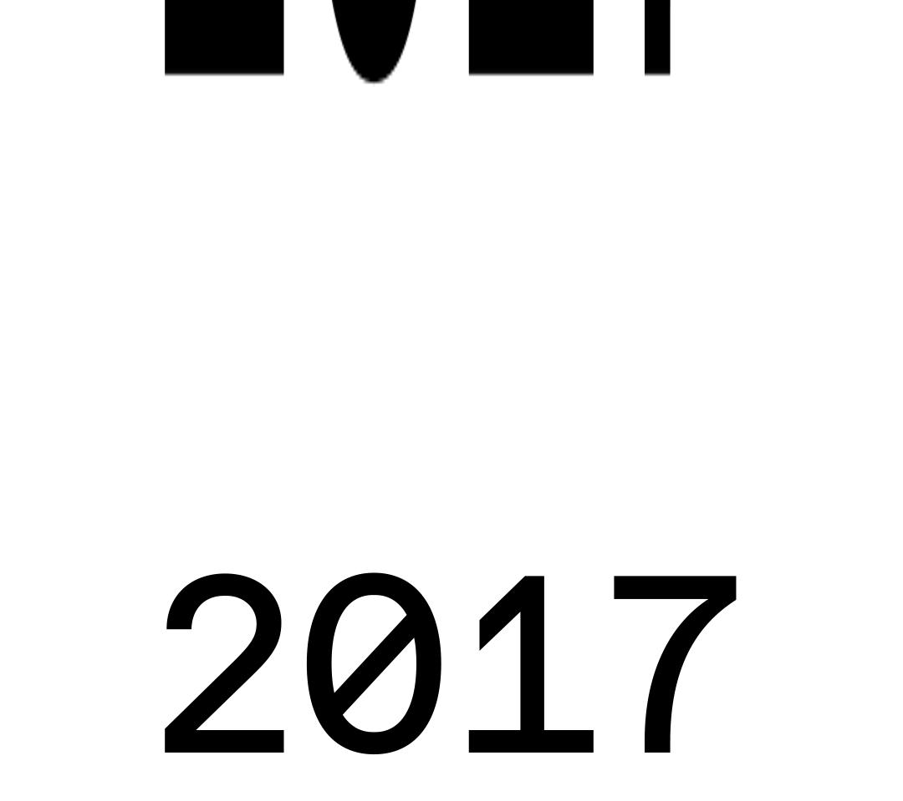

LP
works
about
Who is
Luca Porracchia
Porro?
I'm Porro* a visual designer based in Turin.
I love mango, branding and motion design.
I graduated in 2018 at
Politecnico di Torino in “Design and Visual Communication”
.
Drop me a line → porracchia.luca@gmail.com
Stalk me on
Ig
,
Be
,
in
*It’s my nickname
Scroll
↓
for more
– Graphic Days Torino Vol 04
art curator, event coordinator, graphic & motion designer
– County of Milan
motion designer
– Quattrolinee
visual design intern for Graphic Days Torino Vol 03

– Graphic Days Torino Vol 02
accreditation officer